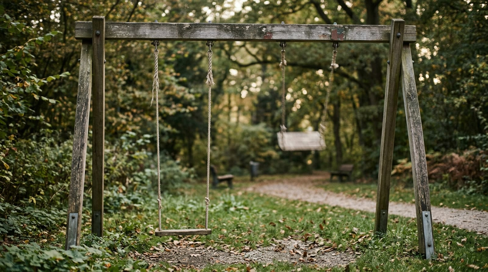
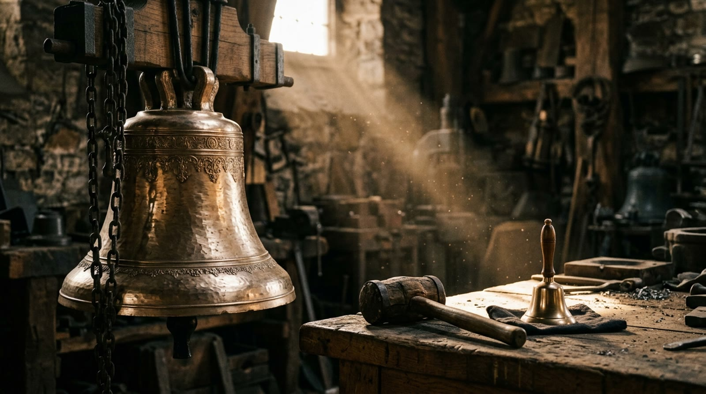
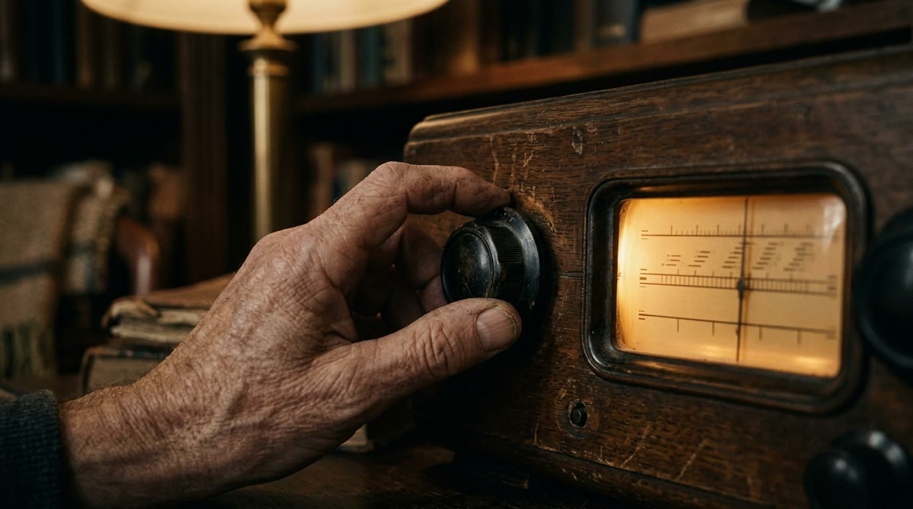

extra 07 · fora da linha do tempo
O Hertz
A rádio diz 89,1, o roteador diz 2,4, o processador diz 3 — e o sobrenome é sempre o mesmo: hertz, mega, giga. Este extra mostra o que esse número conta: quantas vezes por segundo alguma coisa vai e volta. Avance apertando Próximo.
a peça · uma repetição por segundo
Um vai-e-vem por segundo
serve pra qualquer coisa que se repete: coração batendo, gota pingando, martelo batendo — conta-se quantas vezes num segundo
demonstração · o balanço na tela
Conte os vai-e-véns
O balanço está em 1 Hz: um vai-e-vem por segundo. Troque o ritmo e compare o contador com o relógio.
0
deixe contar dez segundos em 2 Hz: o contador fecha perto de 20 — vinte vai-e-véns em dez segundos são dois por segundo
o ritmo próprio · corda curta, corda comprida
Cada balanço tem seu ritmo

guarde essa: quanto menor a coisa, mais rápido ela consegue ir e voltar — isso explica o fecho do episódio
demonstração · a escada dos prefixos
Quilo, mega, giga
1 Hz = 1 vai-e-vém por segundo.
1
o prefixo não muda a medida, só o tamanho do número: 2.400.000.000 Hz e 2,4 GHz são exatamente a mesma coisa escrita de dois jeitos
o som · balanço de ar
Grave é lento, agudo é rápido

o ouvido humano vai mais ou menos de 20 Hz a 20.000 Hz (20 kHz) — abaixo vira tremor, acima a gente simplesmente não escuta
demonstração · ouça a frequência
Aperte e ouça
Cada botão toca um segundo de som na frequência escrita nele. Comece do grave e suba.
repare no padrão: cada botão tem o DOBRO do anterior, e o ouvido escuta o dobro como "a mesma nota, mais aguda" — é a oitava da música
a sintonia · escolher o balanço
O botão do rádio

é por isso que dezenas de estações convivem no mesmo ar sem se misturar: cada uma num ritmo, e o rádio só acompanha um por vez
sua vez · três frequências
Monte você
Monte a frequência pedida.
1 Hz
os três alvos são o mesmo gesto em degraus diferentes da escada: o algarismo conta, o prefixo diz o tamanho do grupo
o fecho · o balanço que não se vê
Por que o giga mora no minúsculo
o minúsculo
Lembra da corda curta? Quanto menor a coisa, mais rápido ela vai e volta. Pra alguma coisa se repetir bilhões de vezes por segundo, ela precisa ser pequena demais pra se ver — é por isso que o giga vive dentro de peças minúsculas, e nunca num balanço de parque.
o apelido
Escrever 2.400.000.000 toda vez cansa: quilo é mil, mega é milhão, giga é bilhão. O prefixo é só tamanho, não é medida nova — 2,4 GHz e 2.400.000.000 Hz são a mesma frase.
onde a analogia quebra
O rádio e a luz não são madeira nem ar balançando: o vai-e-vem deles é de um campo, sem material nenhum se mexendo de lá pra cá. E o giga do processador não é um balanço solto — é um relógio de tiques mandando cada passo acontecer na hora certa. Contar bilhões de tiques por segundo sem se perder… rende outra conversa.